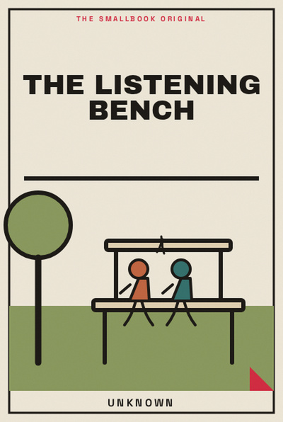

Library › Psychology & People
The Listening Bench - Summary & Key Lessons

Better conversations begin when we create enough safety to understand before trying to be understood.
📖 OPEN THE FULL INTERACTIVE BREAKDOWN →🌐 Read it in Hindi, Hinglish, Gujarati, Tamil & 22 more languages, with audio.
💡 The Big Idea
Better conversations begin when we create enough safety to understand before trying to be understood. The lessons below are designed to be used slowly: read one, try it in a real situation, and return with evidence rather than agreement.
🧠 The 8 Key Lessons
Lesson 1: Arrive Without a Verdict
Chapter 1: Arrive Without a Verdict
Listening begins by noticing the conclusion you arrived with before the other person spoke. Better conversations begin when we create enough safety to understand before trying to be understood. The useful question is not whether this is perfectly true in every situation, but what it helps you notice before you act. Most people skip this step because the visible task feels urgent. The book asks you to slow down long enough to identify the constraint, trade-off or relationship underneath the task. Once that is clear, a smaller and more reliable move becomes possible. Repeated over time, that move changes the system rather than merely decorating the surface of it.
📖 Example: A sibling enters a money conversation assuming selfishness, then pauses to ask what pressure the other person is carrying. The point is not to copy the situation exactly. Notice the sequence: make the hidden condition visible, choose the next action that respects it, and then observe what happens. That turns a memorable story into a testable practice instead of a slogan. Read the full example →
⚡ Do this: Before a hard conversation, write the story you are telling yourself and one alternative story.
Lesson 2: Ask for the Scene
Chapter 2: Ask for the Scene
Specifics reduce accusation and invite shared reality. Better conversations begin when we create enough safety to understand before trying to be understood. The useful question is not whether this is perfectly true in every situation, but what it helps you notice before you act. Most people skip this step because the visible task feels urgent. The book asks you to slow down long enough to identify the constraint, trade-off or relationship underneath the task. Once that is clear, a smaller and more reliable move becomes possible. Repeated over time, that move changes the system rather than merely decorating the surface of it.
📖 Example: Instead of “you never help,” a flatmate asks what happened on the three evenings the cleaning was missed. The point is not to copy the situation exactly. Notice the sequence: make the hidden condition visible, choose the next action that respects it, and then observe what happens. That turns a memorable story into a testable practice instead of a slogan. Read the full example →
⚡ Do this: Replace one global accusation with a question about a specific moment.
Lesson 3: Reflect Before You Reply
Chapter 3: Reflect Before You Reply
A brief reflection proves you heard the meaning, not merely the words. Better conversations begin when we create enough safety to understand before trying to be understood. The useful question is not whether this is perfectly true in every situation, but what it helps you notice before you act. Most people skip this step because the visible task feels urgent. The book asks you to slow down long enough to identify the constraint, trade-off or relationship underneath the task. Once that is clear, a smaller and more reliable move becomes possible. Repeated over time, that move changes the system rather than merely decorating the surface of it.
📖 Example: A manager says, “You are worried this deadline will create unsafe shortcuts,” before offering a solution. The point is not to copy the situation exactly. Notice the sequence: make the hidden condition visible, choose the next action that respects it, and then observe what happens. That turns a memorable story into a testable practice instead of a slogan. Read the full example →
⚡ Do this: In your next disagreement, summarise the other person’s concern before stating yours.
Lesson 4: Separate Impact From Intent
Chapter 4: Separate Impact From Intent
Good intent does not erase harm, and harm does not automatically prove bad intent. Better conversations begin when we create enough safety to understand before trying to be understood. The useful question is not whether this is perfectly true in every situation, but what it helps you notice before you act. Most people skip this step because the visible task feels urgent. The book asks you to slow down long enough to identify the constraint, trade-off or relationship underneath the task. Once that is clear, a smaller and more reliable move becomes possible. Repeated over time, that move changes the system rather than merely decorating the surface of it.
📖 Example: A joke lands badly; both people can discuss its impact without declaring a character trial. The point is not to copy the situation exactly. Notice the sequence: make the hidden condition visible, choose the next action that respects it, and then observe what happens. That turns a memorable story into a testable practice instead of a slogan. Read the full example →
⚡ Do this: Use the sentence: “I know you may not have meant it this way; the impact on me was…”
Lesson 5: Make a Small Request
Chapter 5: Make a Small Request
Large emotional problems often improve through a clear behavioural agreement. Better conversations begin when we create enough safety to understand before trying to be understood. The useful question is not whether this is perfectly true in every situation, but what it helps you notice before you act. Most people skip this step because the visible task feels urgent. The book asks you to slow down long enough to identify the constraint, trade-off or relationship underneath the task. Once that is clear, a smaller and more reliable move becomes possible. Repeated over time, that move changes the system rather than merely decorating the surface of it.
📖 Example: Two friends agree to send a message when plans change rather than reopening every old disappointment. The point is not to copy the situation exactly. Notice the sequence: make the hidden condition visible, choose the next action that respects it, and then observe what happens. That turns a memorable story into a testable practice instead of a slogan. Read the full example →
⚡ Do this: End one conversation with a request that can be observed this week.
Lesson 6: Leave Space for Silence
Chapter 6: Leave Space for Silence
People need seconds to think, especially when feelings are involved. Better conversations begin when we create enough safety to understand before trying to be understood. The useful question is not whether this is perfectly true in every situation, but what it helps you notice before you act. Most people skip this step because the visible task feels urgent. The book asks you to slow down long enough to identify the constraint, trade-off or relationship underneath the task. Once that is clear, a smaller and more reliable move becomes possible. Repeated over time, that move changes the system rather than merely decorating the surface of it.
📖 Example: A parent waits after asking a teenager a question and hears more than they would have after filling the gap. The point is not to copy the situation exactly. Notice the sequence: make the hidden condition visible, choose the next action that respects it, and then observe what happens. That turns a memorable story into a testable practice instead of a slogan. Read the full example →
⚡ Do this: Count to five after asking one important question today.
Lesson 7: Know When to Pause
Chapter 7: Know When to Pause
A pause protects a relationship when bodies are too activated to listen. Better conversations begin when we create enough safety to understand before trying to be understood. The useful question is not whether this is perfectly true in every situation, but what it helps you notice before you act. Most people skip this step because the visible task feels urgent. The book asks you to slow down long enough to identify the constraint, trade-off or relationship underneath the task. Once that is clear, a smaller and more reliable move becomes possible. Repeated over time, that move changes the system rather than merely decorating the surface of it.
📖 Example: A couple agrees to take a 20-minute walk and return at a set time instead of escalating. The point is not to copy the situation exactly. Notice the sequence: make the hidden condition visible, choose the next action that respects it, and then observe what happens. That turns a memorable story into a testable practice instead of a slogan. Read the full example →
⚡ Do this: Choose a pause phrase and a return time for difficult conversations.
Lesson 8: Close With a Check
Chapter 8: Close With a Check
A useful ending makes the next contact safer. Better conversations begin when we create enough safety to understand before trying to be understood. The useful question is not whether this is perfectly true in every situation, but what it helps you notice before you act. Most people skip this step because the visible task feels urgent. The book asks you to slow down long enough to identify the constraint, trade-off or relationship underneath the task. Once that is clear, a smaller and more reliable move becomes possible. Repeated over time, that move changes the system rather than merely decorating the surface of it.
📖 Example: After a disagreement, a team member asks what was understood and what still needs care. The point is not to copy the situation exactly. Notice the sequence: make the hidden condition visible, choose the next action that respects it, and then observe what happens. That turns a memorable story into a testable practice instead of a slogan. Read the full example →
⚡ Do this: Close one conversation by asking, “What are you taking from this?”
✅ 5-Step Action Plan
- Before a hard conversation, write the story you are telling yourself and one alternative story.
- Replace one global accusation with a question about a specific moment.
- In your next disagreement, summarise the other person’s concern before stating yours.
- Use the sentence: “I know you may not have meant it this way; the impact on me was…”
- End one conversation with a request that can be observed this week.
⚠️ When This Doesn't Work
A book can offer a useful lens, not a universal rule. Your money, health, family duties, workplace power and access to support change what is possible. Keep the principle, adapt the practice, and ask for expert help where the stakes are high.
💀 The Graveyard Proves It
💬 Best Quotes from The Listening Bench
- “Better conversations begin when we create enough safety to understand before trying to be understood.”
- “Small, honest experiments are more useful than impressive intentions.”
- “A good idea becomes valuable only when it changes the next choice.”
Interactive version: mark lessons as read, listen in your language, share quote cards.